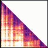
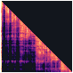
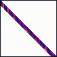
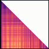
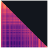
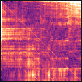
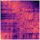
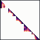
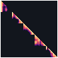

attnbank 0.2.0 · efficient attention, side by side
Every efficient attention method changes one object in one formula¶
Attention is a query-conditioned expectation. Efficiency has to come from somewhere, and there are only so many places it can come from: a method either evaluates the expectation differently, or it changes one of the objects in it. There are seven objects, so there are seven categories — and that is the library's directory structure, not a diagram drawn afterwards.
the bank, to scale each band is one category's share of the 78
Ht = Ht−1 + ψ(kt) vt⊤ — a different operator, not an approximation
Seven keys, one per object a method can change. Choosing one shows where that category reaches into the operator.
- Changes
- Nothing. The integrand, the measure and the normaliser are the reference operator's; only the order of the arithmetic changes.
- Consequence
- Tiling, online softmax and partitioned reductions reassociate the same sum, so the answer is identical and only the memory traffic moves. The interesting question is where exactness stops —
flashandsplitkare exact to floating point,lowprecis not, and that boundary is the point of the category. - Read on
exactin the taxonomy
- Changes
- The interaction g(q, x), replaced by a cheaper surrogate ĝ on the same n positions.
- Consequence
- Separable surrogates turn the numerator and the normaliser into finite moments. The values are untouched, so the whole error is distributional. Positive features keep π̂q a probability measure; trigonometric and Nyström ones do not, and say so in an attribute rather than in a footnote.
- Read on
interactionin the taxonomy
- Changes
- The support of πq, which shrinks to a subset Sq and is renormalised on it.
- Consequence
- One operator, differing only in how Sq is chosen — and the error has an exact closed form: the omitted mass times the contrast between the omitted and the retained conditional means. Nothing is discarded, so the context stays available to later queries.
- Read on
restrictin the taxonomy
- Changes
- The stored context (μ, k, v) itself — quantised, factored, evicted, merged, or shared across heads.
- Consequence
- The only category that routinely perturbs the integrand, so v̂ ≠ v and the error has a value term as well as a distributional one. Key error passes through the softmax; value error is only reweighted, which is why keys cost more per bit.
- Read on
compressin the taxonomy
- Changes
- The shape of πq: it is routed through r latents, πq = a(q, ·) b(·, x), which caps the rank of the attention matrix at r.
- Consequence
- A composition of two Markov kernels is still a probability measure, so normalisation survives. The price is structural: nonnegative rank exceeds rank, so a stochastic factorisation cannot reach a signed one of the same size — and the bank carries both oracles that measure the gap.
- Read on
factorizein the taxonomy
- Changes
- The normalisation. Z(q) stops being a per-query constant and becomes a global constraint.
- Consequence
- Imposing marginals on the joint law couples queries that softmax treats independently, and the conditionals that come back are exactly softmax tilted by one potential per key. Queries are no longer independent, so there is no causal version — and asking for one raises an error that says so.
- Read on
couplingin the taxonomy
- Changes
- The operator. y comes from a finite-state recurrence over positions rather than from an integral against a measure.
- Consequence
- A fixed-size state must serve every future query, which bounds recall however it is trained. It is still linear in v, so the invariant holds and the implied weights can be written down — they are simply not a probability measure. Fidelity to softmax is not the goal here.
- Read on
recurrentin the taxonomy
objective
approximate- Targets dense softmax, and is fairly measured by output error.
modify- Is a different operator. Fidelity to softmax was never the goal, so output error is the wrong question to ask of it.
The same head, six ways¶
docs/gen_heatmaps.py
Invariant W means every method can hand back the measure \(\widehat\pi_q\) it puts over context positions — so the taxonomy above can be drawn. Each square below is that measure for one method, over the same 80 tokens, read by the same attention head. Rows are queries, columns are keys; brighter is more mass.
-


dense softmaxthe referenceexactEverything below approximates this. The bands and bright columns are what this head does.
-
linear_elug → ĝinteraction
A separable surrogate replaces the interaction, and the measure smears.
-

windoww = 8restrictThe support shrinks to a band and is renormalised on it.
-


abcr = 8factorizeRouted through 8 latents, so the rank is capped and the measure stripes.
-


sinkhorn5 iterationscouplingA square, not a triangle: coupling queries makes a causal version impossible.
-


megachunk = 16recurrentA finite-state recurrence. Not an approximation of softmax at all.
Real activations — layer 5, head 3 of GPT-2 reading one passage of wikitext-103,
captured where the model computes attention and checked at capture time to reproduce
its own output. Six of the seven categories are here; compress is missing on
purpose, because its measure looks almost exactly like dense softmax and its error
lives in the values instead — which is the whole reason the library reports two
numbers rather than one.
One invariant, held by all 78¶
attnbank.conformance.check_invariant
Every method realises, explicitly or implicitly, a measure π̂q over context positions and a value field v̂ — and must be able to hand you both.
y == weights @ (v_hat if v_hat is not None else value)
Checked for every registered method, in float32 and float64.
This is the load-bearing property of the library. The error metrics decompose output
error into a distributional term and a value term, and that decomposition is
meaningless unless each method's reported weights and values really do reproduce its
own output. A method that genuinely cannot express its measure on the original
n positions declares expresses_weights = False and is excluded from those
studies by declaration, not by accident.
Correctness is anchored to an exact limit rather than to inspection. Each method
declares the configuration under which it provably reduces to dense softmax —
top-k with k = n, quantisation at full precision,
Nyström with every token a landmark — and the suite holds it to that, to 1e-5 in the
output and 1e-6 in the weights. There is nowhere for a transposed index or a dropped
scale factor to hide.
eleven checks, parametrised over every registered method
tests/test_conformance.py
- Shapes, for every tensor the method returns
- The invariant above
- Row stochasticity, where the method claims it
- No causal leakage, under perturbation of future keys
- Batch and head independence
- Exact reduction to softmax at the declared limit
- Monotone convergence, for the Monte-Carlo estimators
- Agreement across float32, float64, CPU and CUDA
- A cost model that is finite, positive and consistent
- No NaN at empty support or at large logits
- Every cited key resolves in the bibliography
A method that cannot pass a check must say so in a declaration attribute, not in a
skip. How the suite reads those declarations.
What the approximation cost you, and in which of the two ways¶
attnbank.metrics.error_decomposition
Output error is one number, and one number cannot say what went wrong. Keeping the top 87 keys of 1024 and keeping every key but storing the values in a single bit are not comparable mistakes, and here they cost exactly the same:
import torch, attnbank as ab
torch.manual_seed(0)
q, k, v = (torch.randn(1, 4, 1024, 64) for _ in range(3))
rows = ab.compare(["topk", "quantkv", "performer"], q, k, v,
configs={"topk": {"k": 87},
"quantkv": {"bits_k": 16, "bits_v": 1},
"performer": {"r": 64}})
| decomposes into | ||||
|---|---|---|---|---|
| method | category | output error | distributional | value |
topk | restrict | 0.66 | 0.66 | 0.00 |
quantkv | compress | 0.66 | 0.00 | 0.66 |
performer | interaction | 1.37 | 1.37 | 0.00 |
boxed — the same number · a different mechanism
Restriction moves mass to the wrong places. The error is distributional; the values are untouched. Spend more of the budget on k and it falls.
Quantisation aggregates the wrong values. The mass is where it should be; the integrand is not. Raising k would not move this number at all.
Both arrive as "error" in a single number, and the ranking by that number says nothing about which repair would help. Only the split does — and the split is algebra, not a heuristic: across 290,816 query rows, and every registered method that can express its measure, the two terms reproduce the output error to within 7 × 10−12 in float64.
The first call¶
Tensors are [B, H, n, d] throughout, and causal masking aligns the last query with
the last key, so the same code path serves prefill and decode. The worked version,
with tensor conventions and the first comparison, is the quickstart.
where to go next
- The taxonomy →
- The seven categories as a tree you can open, with what each one preserves and which error term it incurs.
- Browse the bank →
- All 78 methods, searchable by name, category, objective, backend and flag — one generated page each.
- The invariant
- Why
weights @ v_hatis the property everything else rests on, and what it costs a method to be unable to supply it. - Backends
reference,sdpa,flash_attn, and why most of the bank correctly declares only the first.- Examples gallery
- Ten short scripts, each executed to produce the output shown beside it.
- API reference
- Every public function, with a runnable example in its docstring.
Citing¶
attnbank is the companion code for What Does Efficient Attention Approximate? A
Unified View of Interactions, Memory, and Error. If the library or its taxonomy is
useful in your work, please cite the monograph.
attnbank 0.2.0 · released under the Apache License 2.0